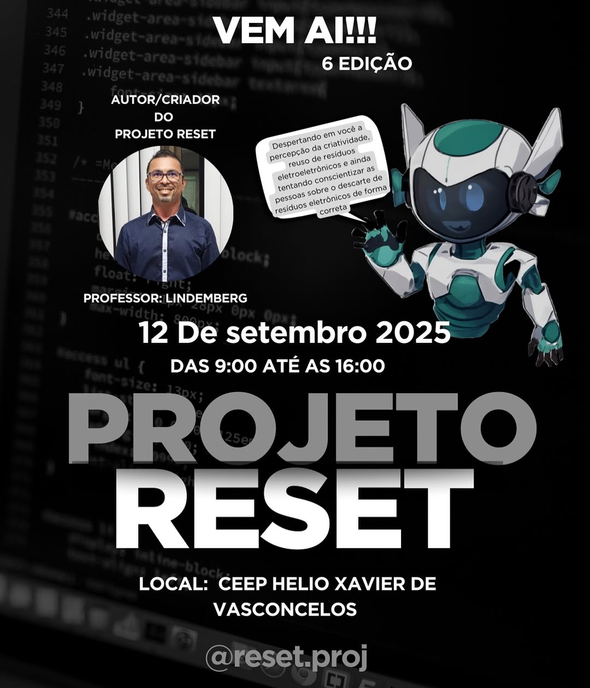
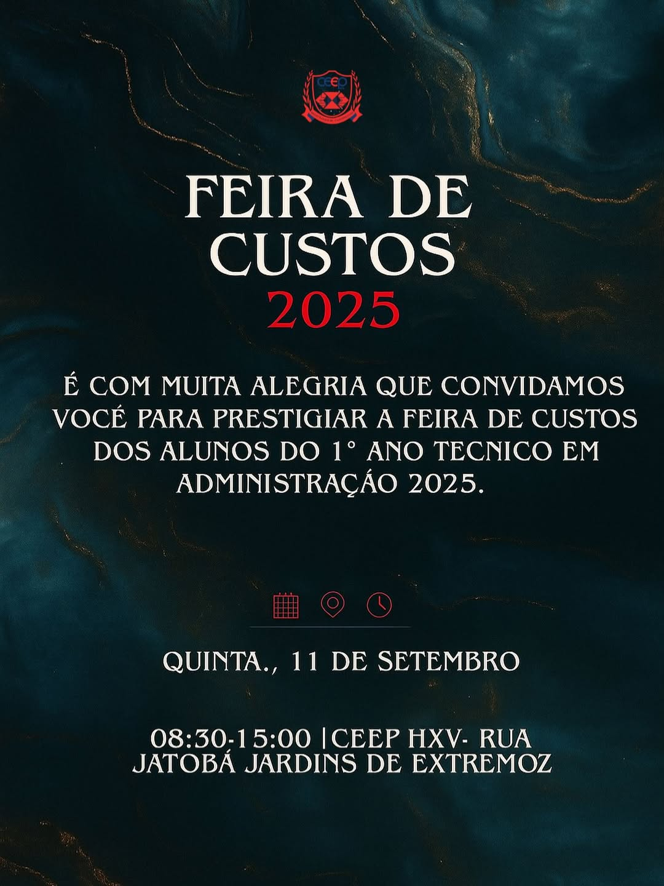

Irá começar o evento da semana da área técnica!

No dia 10 de Setembro
dia irá comecar a abertura da semana da area tecnica, conhecida como Amostra de Empreededorismo e
Tecnologia. Nela haverao quatro principais projetos: Feira de Custos, Projeto Reset, Mesa dos Leões e o
Digital Ao Extremo.
Você pode ficar por dentro de todas as informações e ultimos anuncios de eventos
atraves do perfil no Instagram da escola @ceephelioxavier ou pelo perfil
do GERAB @
Digital ao Extremo!

No dia 12, a turma do 2"A" Infórmatica irão apresentar o Digital ao Extremo, que irá ocorrer no auditório.
Mesa dos Leões!

No dia 11 de setembro, irá ocorrer a 5° edição da Mesa dos Leões, onde que as turmas do 2° A e 2 B de Administração irão apresentar a Mesa dos Leões, este evento irá ocorrer no auditório. Às 07:30 às 12:00 e 13:20 até 17h.
Projeto Reset!
As turmas dos 1ª anos de informática, irão apresentar o Projeto Reset, que estará acontecendo nas salas.
Feira de Custos!
As turmas do 1ª anos de administração irão apresentar a feirinha de custos, que estará acontecendo nos corredores da parte de baixo. O evento irá começar às 09:00 até o 12:00, e irá retornar às 13:20 às 15:00.
Gincana Junina!
Temos a gingana junina 2025, que aconteceu nos dias 16, 17 e 18 de junho. Onde que as equipes: os matutos,
fulô de mandacaru, guardiões da fogueira, estrelas do sertão, os cangaceiros e a asa branca, disputavam o pódio.
Registros do dia estão no instagram do grêmio estudantil
: @gerab
Dia do Estudante!

No dia 22 de agosto, tivemos o evento do estudante. Que começou às 12:30hrs até 16:10. Neste dia tivemos várias brincadeiras, como por exemplo: Guerra de sabão de água, futebol de sabão e também tivemos o jogo dos professores. Registros do dia estão no instagram do grêmio estudantil: @gerab.ceephxv e o Instagram oficial da escola @ceephelioxavier